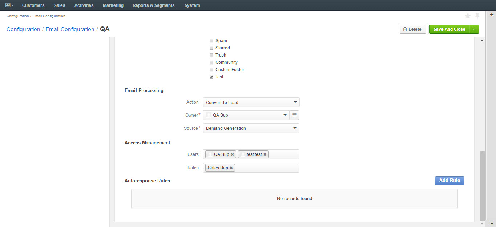

System mailbox allows people who do not have access to the company mailbox addresses write to the company.
To create a system mailbox to process business information requests:
The General section defines the basic settings of the mailbox created:
In the Synchronization section, configure your IMAP/SMTP connection:
In the Email Processing section you can choose what actions will be performed with all the emails received in the mailbox.
Out of the box three different actions are available.
This functionality can be expanded through customization to match your business’s unique requirements.
Do nothing. In this case no actions will be performed. Emails will be saved in the mailbox and can be accessed by those users with the permission to do so.
Convert to Lead. Letters will be saved in the mailbox and a new lead record will be created in OroCRM.
Note
In order to have an option to Convert to Lead, you need to have a Sales channel activated. Otherwise, this option will not be available on the list of options.
Convert to Case. A new case record will be created in OroCRM based on the email received.
As an example, let us select the Convert To Lead option:
Note
Options in the Source field should be defined in advance. This can be done through the entity manager in System>Entities>Entity Management>Lead>Source.
in the Access management section, define which OroCRM users will have access to the system mailbox. You can select roles and/or specific users. All the users with defined roles and all the specifically defined users will have access to this mailbox.
In the Autoresponse Rules section you can generate one or several auto-response rules. These rules will determine which template is sent to the sender of the email.
| Field | Description |
|---|---|
| Status (Active/Inactive) | Only rules with active statuses are applied. |
| Name | Select the name for the rule to be used within the system. |
| Conditions | Define the rules according to which the rule will be applied: 1. In the first selector, choose the field for which the condition is to be set: Body, From, Cc, Bcc. 2. In the second selector, choose the conditions (e.g. contains, does not contain, is equal to, starts with, etc.). 3. In the field besides the selectors, define the values where required. Click the + or +Add button to add another condition for the rule. Click the x button to remove the condition. All conditions are summed up (AND operator). |
| Response template | Choose an email template for autoresponse. |
| Type | Choose if you want to use html or plain text for the email. |
| Translations | If you have more than one language configured in the system, select the necessary translation. |
| Email Template | Enter the subject and content of your email. |
| Save Response As Email Template | Checking the box automatically saves the current email as a template. |